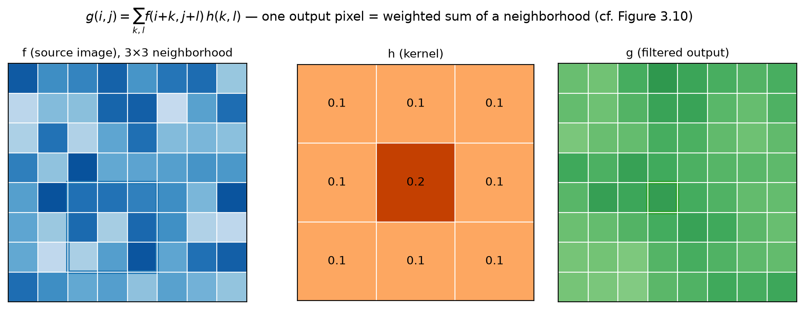
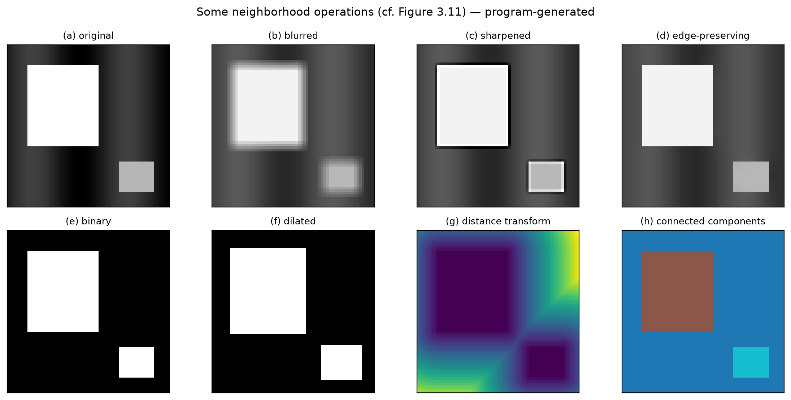
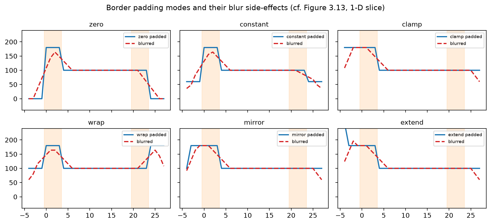
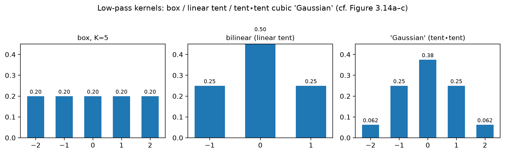
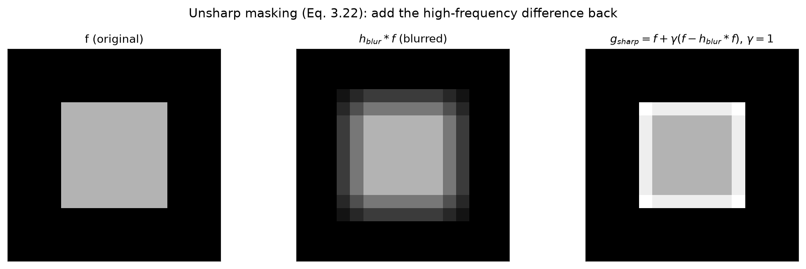
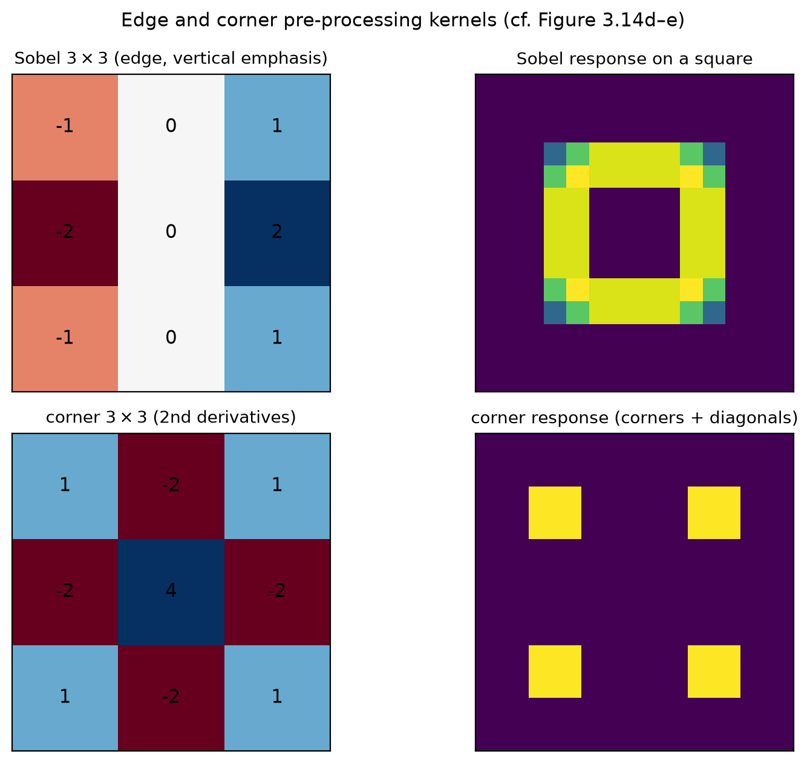

第 3 章 · 线性滤波
从看一个像素，到看一片邻居
上一集的直方图均衡，就是一个邻域算子。
邻域算子用一片像素，共同决定一个输出。
它能模糊、锐化、强化边缘、去除噪声。
本集走三段：卷积机制、边界补全、常用核。
依据：原书第 119 页
本集三段
机制：相关、卷积、冲激响应
边界：六种补全模式
常用核：均值、锐化、找边
正课第十五集
01 / 9
第 3.2 节 · 加权和
线性滤波：邻域里的加权和
输出像素等于邻域像素的加权和，式 3.12。
权重表叫核，也叫掩模；系数叫滤波系数。
相关记作 f⊗h，核不翻转，直接滑。
8×8 图配 0.1/0.2 核，输出 6×6。
依据：原书第 120 页

源图 3×3 邻域、核与输出像素｜程序生成，未用教材或论文原图
正课第十五集
02 / 9
第 3.2 节 · 相关与卷积
卷积：先把核转半圈
卷积把输入偏移取反，式 3.14、3.15。
核转 180°；对称核下两者相同。
冲激信号卷积复现核，相关给镜像。
实验最大差 0.1200；八宫格只有模糊、锐化是线性。
依据：原书第 120–121 页

邻域运算八宫格：原图、模糊、锐化、保边、二值化、膨胀、距离、连通域｜程序生成，未用教材或论文原图
正课第十五集
03 / 9
第 3.2 节 · 线性移不变
两张名片：叠加与平移
叠加：先加再滤波，等于分别滤波再加，式 3.16。
平移不变：信号平移，输出跟着平移，式 3.17。
书上说算子 behaves the same everywhere。
图像拉直成向量，卷积写成 g=Hf，式 3.19。
依据：原书第 122 页
两条性质
叠加原理：式 3.16
平移不变：式 3.17
矩阵视角：g=Hf，H 稀疏
正课第十五集
04 / 9
第 3.2 节 · 边界补全
核伸出图外，六种补法
补零、补常数、复制、绕回、镜像、外插。
四连断言：补零暗、复制内传、镜像保色、外插定住。
均匀图补零 61.11，镜像与复制保持 100。
归一化补零去暗角：角点 160、边中 140。
依据：原书第 123–124 页

六种补全模式与 5 点 box 模糊结果｜程序生成，未用教材或论文原图
正课第十五集
05 / 9
第 3.2.2 节 · 常用核
从方块核到「高斯」
方块核：K×K 取平均，等于全一核再缩放。
K=15：直接法 225 次乘加，滑窗每趟 2 次。
帐篷核卷帐篷，得 [1,4,6,4,1]/16。
它们都是低通核：放行低频，衰减高频。
依据：原书第 125–126 页

box、tent、tent⋆tent「高斯」核的一维剖面｜程序生成，未用教材或论文原图
正课第十五集
06 / 9
第 3.2.2 节 · 锐化
非锐化掩模：两条路
式 3.22：gsharp=f+γ(f−hblur∗f)。
式 3.23：暗房负片叠印，g=f(1−γhblur∗f)。
γ 从 0 到 1，边缘强度提升 1.74 倍。
暗房版非线性：叠加违反量 0.7569。
依据：原书第 126 页；本集实验

式 3.22 锐化：原图、模糊图与锐化结果｜程序生成，未用教材或论文原图
正课第十五集
07 / 9
第 3.2.2 节 · 找边找角
Sobel 与角点核
Sobel：竖直帐篷 × 水平中心差分。
实测竖直边 4.00，水平边 0.00。
角点核找横竖二阶差分；角点 1.00、对角边 3.00。
作业 3.9 写补全公式；3.10 下集讲。
依据：原书第 126–127 页；本集实验

Sobel 与 corner 核及其在方块上的响应｜程序生成，未用教材或论文原图
正课第十五集
08 / 9
小结与移交
本集清单：从机制到常用核
相关不翻转，卷积转 180°；冲激一验便知。
六种补全：零暗、复制传、镜像保、外插定。
方块核滑窗快，帐篷卷出近似高斯。
锐化两条路；Sobel 找边，角点核初瞥。
依据：原书第 119–127 页；下集预告第 124/127/129–130 页
下一集
3.2.1 可分离滤波：SVD 判据
3.2.3 带通与转向滤波
求和面积表：方块核快算法
正课第十五集
09 / 9